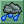
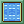
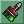
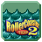

Water Creator
 Features
Features
Author: Robert Jordan
Version: v1.0.0.0
A simple program for creating water types for RollerCoaster Tycoon 2. You can edit existing water types, or create your own from scratch.


{kind=link}
 About Water Palettes
About Water Palettes
Water in RCT2 is represented by a palette of colors. Since RCT2 can only use 256 colors at once, water will change the base palette of the game.
General Palette
This palette changes the two remap colors effected by water color. This will also change the basic non-animated part of flat water.
Waves Palette
These three palettes animate the waves in flat water and on water rides. Each row is used for a different level of darkness during rain.
The top palette is used for sunny weather. The middle one is used in the transition to rainy weather. And the bottom one is used during rainy weather.
Sparkles Palette
These three palettes animate the sparkles in flat water and on water rides. Each row is used for a different level of darkness during rain.
The top palette is used for sunny weather. The middle one is used in the transition to rainy weather. And the bottom one is used during rainy weather.
 Controls
Controls
 Sunny Weather
Sunny WeatherChange the weather lighting to sunny.
 Cloudy Weather
Cloudy WeatherChange the weather lighting to cloudy.
Rainy Weather
Change the weather lighting to rainy.
 Ride View
Ride ViewChange the view to a water ride.
Water View
Change the view to an open expanse of water.
Color Dialog
Open up the color dialog for the selected color.
 Change Names
Change NamesChange the names of the water type for each language.
Click Selected Color
Automatically opens up the color dialog without having to press the color dialog button.
Ctrl+C & Ctrl+V
Allows you to copy and paste the selected color.
 Download
Download
Download Water Creator
Click here to download RCT2 Water Creator as a standalone executable.
 Donate
Donate
Click here to make a donation to Trigger's RCT2 Tools. Your support means a lot.